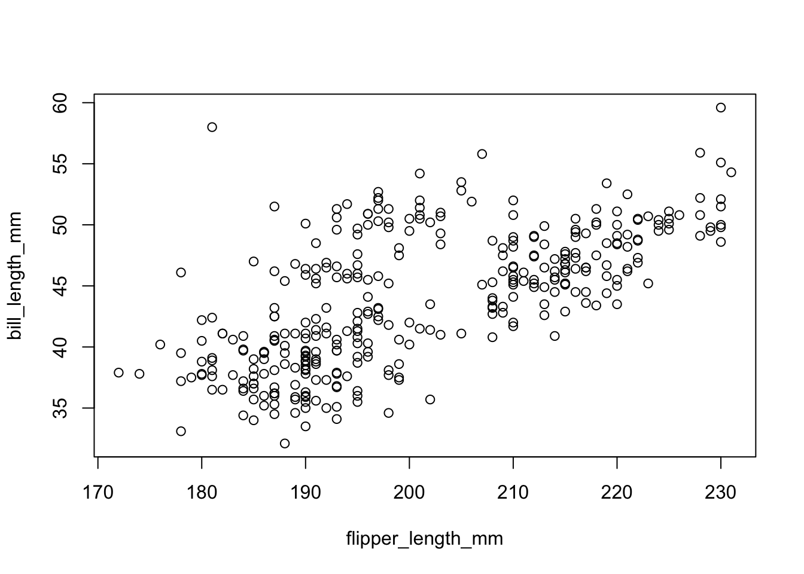
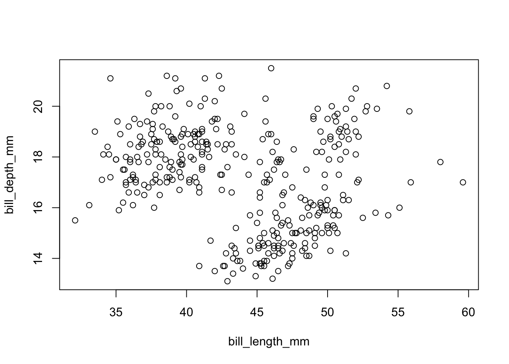
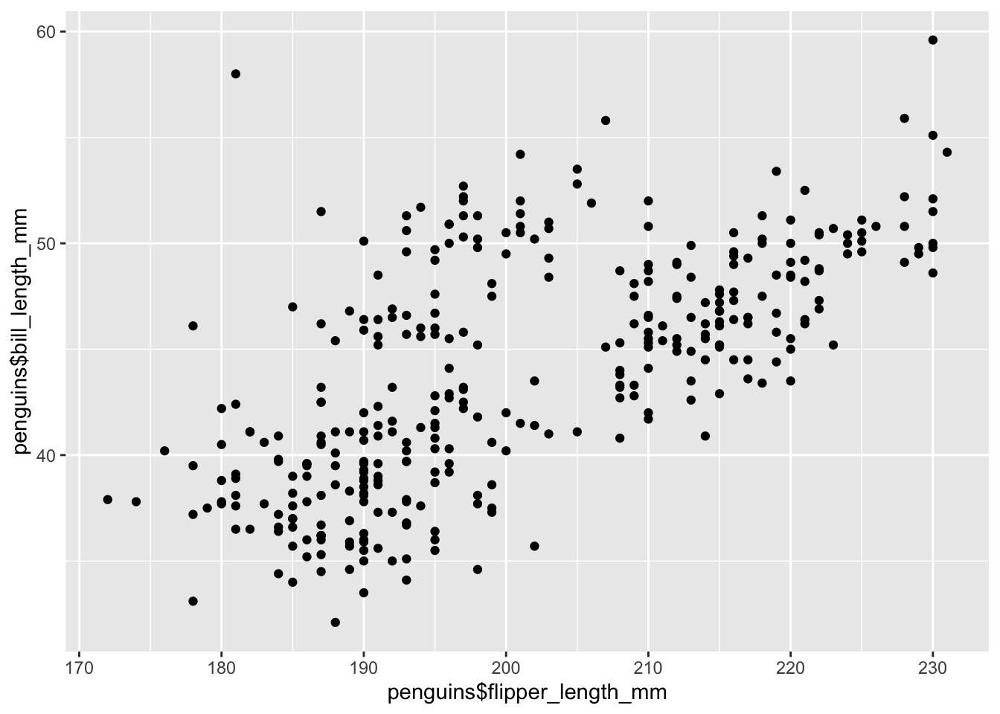
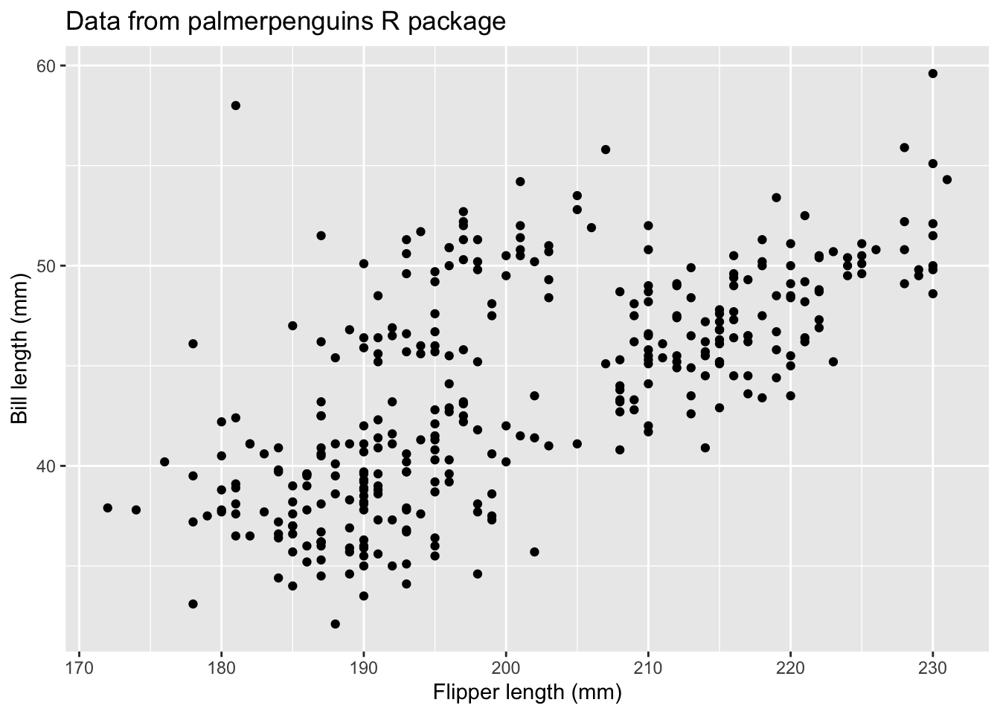
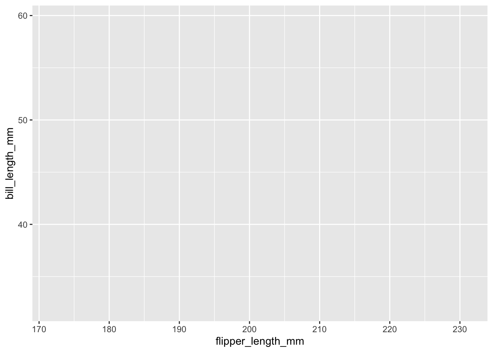
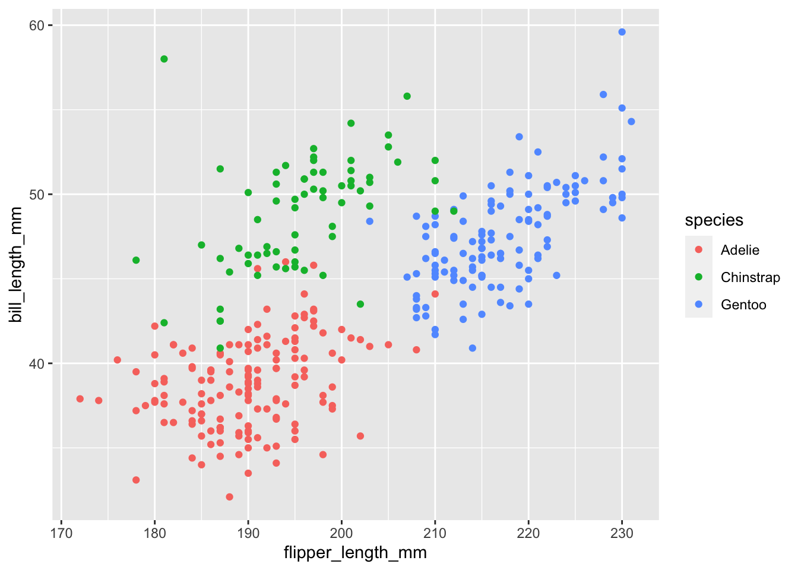
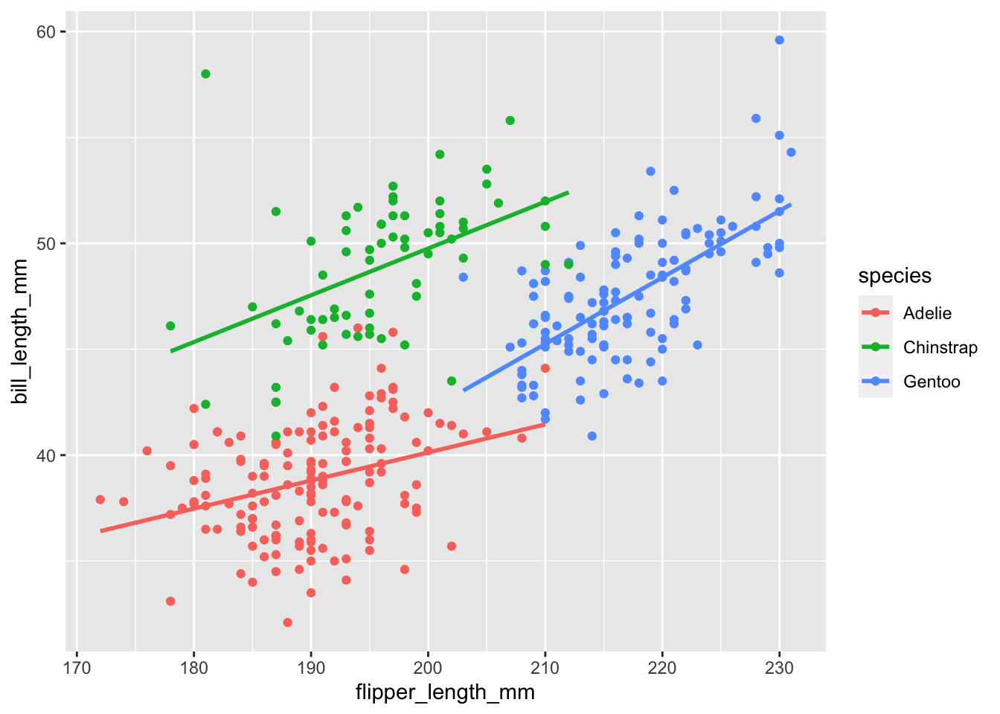

Motivation
Throughout this section we will be analyzing a dataset about penguins. The name of the dataset is palmerpenguins, which is available as a CRAN package.
To install the palmerpenguins data set
install.packages("palmerpenguins")Loading data into R
library(palmerpenguins)Meet the penguins data frame or “tibble”
By loading the palmerpenguins package, we now have access to a data frame called penguins. Get an overview of this with str(), which displays the structure of an object.
str(penguins)tibble [344 × 8] (S3: tbl_df/tbl/data.frame)
$ species : Factor w/ 3 levels "Adelie","Chinstrap",..: 1 1 1 1 1 1 1 1 1 1 ...
$ island : Factor w/ 3 levels "Biscoe","Dream",..: 3 3 3 3 3 3 3 3 3 3 ...
$ bill_length_mm : num [1:344] 39.1 39.5 40.3 NA 36.7 39.3 38.9 39.2 34.1 42 ...
$ bill_depth_mm : num [1:344] 18.7 17.4 18 NA 19.3 20.6 17.8 19.6 18.1 20.2 ...
$ flipper_length_mm: int [1:344] 181 186 195 NA 193 190 181 195 193 190 ...
$ body_mass_g : int [1:344] 3750 3800 3250 NA 3450 3650 3625 4675 3475 4250 ...
$ sex : Factor w/ 2 levels "female","male": 2 1 1 NA 1 2 1 2 NA NA ...
$ year : int [1:344] 2007 2007 2007 2007 2007 2007 2007 2007 2007 2007 ...str() will provide a sensible description of almost anything and, worst case, nothing bad can actually happen. When in doubt, just str() some of the recently created objects to get some ideas a bout what to do next.
We could print the penguins object itself to screen. However, if you have used R before, you might be reluctant to do this, because large datasets just fill up your console and provide very little insight.
This is the first big win for tibbles. The tidyverse offers a special case of R’s default data frame: the “tibble”, which is a nod to the actual class of these objects, tbl_df.
Now we can boldly print penguins to screen! It is a tibble (and also a regular data frame) and the tidyverse provides a nice print method that shows the most important stuff and doesn’t fill up your Console.
## see? it's still a regular data frame, but also a tibble
class(penguins)[1] "tbl_df" "tbl" "data.frame"penguins# A tibble: 344 × 8
species island bill_length_mm bill_depth_mm flipper_length_mm body_mass_g
<fct> <fct> <dbl> <dbl> <int> <int>
1 Adelie Torgersen 39.1 18.7 181 3750
2 Adelie Torgersen 39.5 17.4 186 3800
3 Adelie Torgersen 40.3 18 195 3250
4 Adelie Torgersen NA NA NA NA
5 Adelie Torgersen 36.7 19.3 193 3450
6 Adelie Torgersen 39.3 20.6 190 3650
7 Adelie Torgersen 38.9 17.8 181 3625
8 Adelie Torgersen 39.2 19.6 195 4675
9 Adelie Torgersen 34.1 18.1 193 3475
10 Adelie Torgersen 42 20.2 190 4250
# ℹ 334 more rows
# ℹ 2 more variables: sex <fct>, year <int>If you are dealing with plain vanilla data frames, you can rein in data frame printing explicitly with head() and tail(). Or turn it into a tibble with as_tibble()!
head(penguins)# A tibble: 6 × 8
species island bill_length_mm bill_depth_mm flipper_length_mm body_mass_g
<fct> <fct> <dbl> <dbl> <int> <int>
1 Adelie Torgersen 39.1 18.7 181 3750
2 Adelie Torgersen 39.5 17.4 186 3800
3 Adelie Torgersen 40.3 18 195 3250
4 Adelie Torgersen NA NA NA NA
5 Adelie Torgersen 36.7 19.3 193 3450
6 Adelie Torgersen 39.3 20.6 190 3650
# ℹ 2 more variables: sex <fct>, year <int>tail(penguins)# A tibble: 6 × 8
species island bill_length_mm bill_depth_mm flipper_length_mm body_mass_g
<fct> <fct> <dbl> <dbl> <int> <int>
1 Chinstrap Dream 45.7 17 195 3650
2 Chinstrap Dream 55.8 19.8 207 4000
3 Chinstrap Dream 43.5 18.1 202 3400
4 Chinstrap Dream 49.6 18.2 193 3775
5 Chinstrap Dream 50.8 19 210 4100
6 Chinstrap Dream 50.2 18.7 198 3775
# ℹ 2 more variables: sex <fct>, year <int>More ways to query basic info on a data frame:
names(penguins)[1] "species" "island" "bill_length_mm"
[4] "bill_depth_mm" "flipper_length_mm" "body_mass_g"
[7] "sex" "year" ncol(penguins)[1] 8length(penguins)[1] 8dim(penguins)[1] 344 8nrow(penguins)[1] 344A statistical overview can be obtained with summary()
summary(penguins) species island bill_length_mm bill_depth_mm
Adelie :152 Biscoe :168 Min. :32.10 Min. :13.10
Chinstrap: 68 Dream :124 1st Qu.:39.23 1st Qu.:15.60
Gentoo :124 Torgersen: 52 Median :44.45 Median :17.30
Mean :43.92 Mean :17.15
3rd Qu.:48.50 3rd Qu.:18.70
Max. :59.60 Max. :21.50
NA's :2 NA's :2
flipper_length_mm body_mass_g sex year
Min. :172.0 Min. :2700 female:165 Min. :2007
1st Qu.:190.0 1st Qu.:3550 male :168 1st Qu.:2007
Median :197.0 Median :4050 NA's : 11 Median :2008
Mean :200.9 Mean :4202 Mean :2008
3rd Qu.:213.0 3rd Qu.:4750 3rd Qu.:2009
Max. :231.0 Max. :6300 Max. :2009
NA's :2 NA's :2
Bill dimensions
The culmen is the upper ridge of a bird’s bill. In the simplified penguins data, culmen length and depth are renamed as variables bill_length_mm and bill_depth_mm to be more intuitive.
For this penguin data, the culmen (bill) length and depth are measured as shown below

Although we have not begun our formal coverage of visualization yet, it’s so important for data exploration dataset that we will make a few figures anyway. Here we use only base R graphics, which are very basic.
plot(bill_length_mm ~ flipper_length_mm, penguins)
plot(bill_depth_mm ~ bill_length_mm, penguins)
Welcome to the “Tidyverse”
The tidyverse is “an opinionated collection of R packages designed for data science. All packages share an underlying philosophy and common APIs.”
Another way of putting it is that it’s a set of packages that are useful specifically for data manipulation, exploration and visualization with a common philosphy.
What is this common philosphy?
The common philosphy is called “tidy” data. It is a standard way of mapping the meaning of a dataset to its structure.
In tidy data:
- Each variable forms a column.
- Each observation forms a row.
- Each type of observational unit forms a table.

Below, we are interested in transformating the table on the right to the the table on the left, which is considered “tidy”.

Working with tidy data is useful because it creates a structured way of organizing data values within a data set. This makes the data analysis process more efficient and simplifies the development of data analysis tools that work together. In this way, you can focus on the problem you are investigating, rather than the uninteresting logistics of data.
What is in the tidyverse?
We can install and load the set of R packages using install.packages("tidyverse") function.
When we load the tidyverse package using library(tidyverse), there are six core R packages that load:
- readr, for data import.
- tidyr, for data tidying.
- dplyr, for data wrangling.
- ggplot2, for data visualisation.
- purrr, for functional programming.
- tibble, for tibbles, a modern re-imagining of data frames.
Here, we load in the tidyverse.
library(tidyverse)Because these packages all share the “tidy” philosophy, the data analysis workflow is easier as you move from package to package.
Today we will focus on dplyr and ggplot2, for data wrangling and visualization, but definitely check out the other packages such as readr, tidyr, R packages to import data, to transform data to the “tidy” format.
Data wrangling
In the real world, analyzing data rarely involves data that can be easily imported and ready for analysis. According to Wikipedia:
Data munging or data wrangling is loosely the process of manually converting or mapping data from one “raw” form into another format that allows for more convenient consumption of the data with the help of semi-automated tools.
As you will see in class, one of the most time-consuming aspects of the data analysis process is “data wrangling”. This is also is a trendy term for cleaning up a messy data set.
R provides incredibly powerful and flexible language for data wrangling. However, the syntax is somewhat hard to get used to. We will therefore introducing a package that makes the syntax much more like the English language. This package is dplyr.
The dplyr R package
dplyr is a powerful R-package to transform and summarize tabular data with rows and columns.
The package contains a set of functions (or “verbs”) to perform common data manipulation operations such as filtering for rows, selecting specific columns, re-ordering rows, adding new columns and summarizing data.
In addition, dplyr contains a useful function to perform another common task which is the is the “split-apply-combine” concept. We will discuss that in a little bit.
How does it compare to using base functions R?
If you are familiar with R, you are probably familiar with base R functions such as split(), subset(), apply(), sapply(), lapply(), tapply() and aggregate(). Compared to base functions in R, the functions in dplyr are easier to work with, are more consistent in the syntax and are targeted for data analysis around data frames instead of just vectors.
The important dplyr verbs to remember are:
dplyr verbs |
Description |
|---|---|
select() |
select columns |
filter() |
filter rows |
arrange() |
re-order or arrange rows |
mutate() |
create new columns |
summarize() |
summarize values |
group_by() |
allows for group operations in the “split-apply-combine” concept |
Pipe operator: |>
Before we go any futher, let’s introduce the pipe operator: |>.
This operator available in base R allows you to pipe the output from one function to the input of another function. Instead of nesting functions (reading from the inside to the outside), the idea of of piping is to read the functions from left to right.
dplyr verbs in action
The two most basic functions are select() and filter() which selects columns and filters rows, respectively.
Selecting columns using select()
To select two columns (species and island),
penguins |>
select(species, island) # A tibble: 344 × 2
species island
<fct> <fct>
1 Adelie Torgersen
2 Adelie Torgersen
3 Adelie Torgersen
4 Adelie Torgersen
5 Adelie Torgersen
6 Adelie Torgersen
7 Adelie Torgersen
8 Adelie Torgersen
9 Adelie Torgersen
10 Adelie Torgersen
# ℹ 334 more rowsTo select all the columns except a specific column, use the “-” (subtraction) operator (also known as negative indexing).
penguins |>
select(-species, -island)# A tibble: 344 × 6
bill_length_mm bill_depth_mm flipper_length_mm body_mass_g sex year
<dbl> <dbl> <int> <int> <fct> <int>
1 39.1 18.7 181 3750 male 2007
2 39.5 17.4 186 3800 female 2007
3 40.3 18 195 3250 female 2007
4 NA NA NA NA <NA> 2007
5 36.7 19.3 193 3450 female 2007
6 39.3 20.6 190 3650 male 2007
7 38.9 17.8 181 3625 female 2007
8 39.2 19.6 195 4675 male 2007
9 34.1 18.1 193 3475 <NA> 2007
10 42 20.2 190 4250 <NA> 2007
# ℹ 334 more rowsThe function select() is much more powerful though. To select a range of columns by name, use the “:” (colon) operator
penguins |>
select(bill_length_mm:body_mass_g)# A tibble: 344 × 4
bill_length_mm bill_depth_mm flipper_length_mm body_mass_g
<dbl> <dbl> <int> <int>
1 39.1 18.7 181 3750
2 39.5 17.4 186 3800
3 40.3 18 195 3250
4 NA NA NA NA
5 36.7 19.3 193 3450
6 39.3 20.6 190 3650
7 38.9 17.8 181 3625
8 39.2 19.6 195 4675
9 34.1 18.1 193 3475
10 42 20.2 190 4250
# ℹ 334 more rowsTo select all columns that end with the character string “c”, use the function ends_with()
penguins |>
select(ends_with("mm"))# A tibble: 344 × 3
bill_length_mm bill_depth_mm flipper_length_mm
<dbl> <dbl> <int>
1 39.1 18.7 181
2 39.5 17.4 186
3 40.3 18 195
4 NA NA NA
5 36.7 19.3 193
6 39.3 20.6 190
7 38.9 17.8 181
8 39.2 19.6 195
9 34.1 18.1 193
10 42 20.2 190
# ℹ 334 more rowsSome additional options to select columns based on a specific criteria include
starts_with()= Select columns that start with a character stringcontains()= Select columns that contain a character stringmatches()= Select columns that match a regular expressionone_of()= Select columns names that are from a group of names
Selecting rows using filter()
Let’s say we only want the data from a specific species.
To do this, we can use the filter() function to filter the rows for the Adelie species.
penguins |>
filter(species == "Adelie")# A tibble: 152 × 8
species island bill_length_mm bill_depth_mm flipper_length_mm body_mass_g
<fct> <fct> <dbl> <dbl> <int> <int>
1 Adelie Torgersen 39.1 18.7 181 3750
2 Adelie Torgersen 39.5 17.4 186 3800
3 Adelie Torgersen 40.3 18 195 3250
4 Adelie Torgersen NA NA NA NA
5 Adelie Torgersen 36.7 19.3 193 3450
6 Adelie Torgersen 39.3 20.6 190 3650
7 Adelie Torgersen 38.9 17.8 181 3625
8 Adelie Torgersen 39.2 19.6 195 4675
9 Adelie Torgersen 34.1 18.1 193 3475
10 Adelie Torgersen 42 20.2 190 4250
# ℹ 142 more rows
# ℹ 2 more variables: sex <fct>, year <int>Note: you can use the boolean operators (e.g. >, <, >=, <=, !=, %in%) to create logical tests.
For example, if we wanted only species with a bill length of greater than or equal to 40, we can add a second criteria:
penguins |>
filter(species == "Adelie") |>
filter(bill_length_mm >= 40)# A tibble: 51 × 8
species island bill_length_mm bill_depth_mm flipper_length_mm body_mass_g
<fct> <fct> <dbl> <dbl> <int> <int>
1 Adelie Torgersen 40.3 18 195 3250
2 Adelie Torgersen 42 20.2 190 4250
3 Adelie Torgersen 41.1 17.6 182 3200
4 Adelie Torgersen 42.5 20.7 197 4500
5 Adelie Torgersen 46 21.5 194 4200
6 Adelie Biscoe 40.6 18.6 183 3550
7 Adelie Biscoe 40.5 17.9 187 3200
8 Adelie Biscoe 40.5 18.9 180 3950
9 Adelie Dream 40.9 18.9 184 3900
10 Adelie Dream 42.2 18.5 180 3550
# ℹ 41 more rows
# ℹ 2 more variables: sex <fct>, year <int>Use mutate() to add new variables
mutate() is a function that defines and inserts new variables into a tibble. You can refer to existing variables by name.
penguins |>
mutate(new_ratio = body_mass_g / bill_length_mm) |>
select(species, island, new_ratio)# A tibble: 344 × 3
species island new_ratio
<fct> <fct> <dbl>
1 Adelie Torgersen 95.9
2 Adelie Torgersen 96.2
3 Adelie Torgersen 80.6
4 Adelie Torgersen NA
5 Adelie Torgersen 94.0
6 Adelie Torgersen 92.9
7 Adelie Torgersen 93.2
8 Adelie Torgersen 119.
9 Adelie Torgersen 102.
10 Adelie Torgersen 101.
# ℹ 334 more rowsArrange or re-order rows using arrange()
To arrange (or re-order) rows by a particular column such as the bill length, list the name of the column you want to arrange the rows by
penguins |>
arrange(bill_length_mm)# A tibble: 344 × 8
species island bill_length_mm bill_depth_mm flipper_length_mm body_mass_g
<fct> <fct> <dbl> <dbl> <int> <int>
1 Adelie Dream 32.1 15.5 188 3050
2 Adelie Dream 33.1 16.1 178 2900
3 Adelie Torgersen 33.5 19 190 3600
4 Adelie Dream 34 17.1 185 3400
5 Adelie Torgersen 34.1 18.1 193 3475
6 Adelie Torgersen 34.4 18.4 184 3325
7 Adelie Biscoe 34.5 18.1 187 2900
8 Adelie Torgersen 34.6 21.1 198 4400
9 Adelie Torgersen 34.6 17.2 189 3200
10 Adelie Biscoe 35 17.9 190 3450
# ℹ 334 more rows
# ℹ 2 more variables: sex <fct>, year <int>If we wanted to arrange in a descending order, we could use the desc() function inside of arrange() to order rows in a descending order.
penguins |>
arrange(desc(bill_length_mm))# A tibble: 344 × 8
species island bill_length_mm bill_depth_mm flipper_length_mm body_mass_g
<fct> <fct> <dbl> <dbl> <int> <int>
1 Gentoo Biscoe 59.6 17 230 6050
2 Chinstrap Dream 58 17.8 181 3700
3 Gentoo Biscoe 55.9 17 228 5600
4 Chinstrap Dream 55.8 19.8 207 4000
5 Gentoo Biscoe 55.1 16 230 5850
6 Gentoo Biscoe 54.3 15.7 231 5650
7 Chinstrap Dream 54.2 20.8 201 4300
8 Chinstrap Dream 53.5 19.9 205 4500
9 Gentoo Biscoe 53.4 15.8 219 5500
10 Chinstrap Dream 52.8 20 205 4550
# ℹ 334 more rows
# ℹ 2 more variables: sex <fct>, year <int>Data visualization
ggplot2
ggplot2 is a powerful data exploration and visualization package that can create graphics in R. It was created by Hadley Wickham when he was a graduate student at Iowa State University and is based on the principals defined in the Grammar of Graphics.
Why is it useful?
The idea of the Grammar of Graphics is to break the graph into components and handle the components of a graph separately. The ggplot2 package contains a set of functions that allow us to build the features of the graph in a series of layers for versatility and control.
There are two main plotting functions in ggplot2:
qplot()= a quick plot, similar to theplot()function in base Rggplot()= a “grammar of graphics” (gg) plot which is made up two components (aggplot()object and at least onegeomlayer)
The ggplot2 is loaded whenever you load tidyverse, but you can always load it formally.
library(ggplot2)Flipper and bill length
Let’s make a scatter plot of the flipper and bill length for each penguin. We will first make a quick plot of these two variables.
qplot
The qplot function allows us to produce simple plots, similar to plot in base R. The main input of qplot is an x and y argument, but it also accepts a data set (data) where the x and y variables are located.
Note
Why does this not work?
qplot(x = flipper_length_mm, y = bill_length_mm) We need to specify where to get these values from. Instead, we can use the vectors of penguins directly
## need to specify where variables are located
qplot(x = penguins$flipper_length_mm, y = penguins$bill_length_mm) Warning: `qplot()` was deprecated in ggplot2 3.4.0.Warning: Removed 2 rows containing missing values (`geom_point()`).
However, a cleaner way to do this is to use the data argument:
qplot(x = flipper_length_mm, y = bill_length_mm, data = penguins)Warning: Removed 2 rows containing missing values (`geom_point()`).
If youw ant to add labels to the x and y axis, you can use the xlab and ylab arguments. You can read the help file to check out other arguments available in the function.
qplot(x = flipper_length_mm, y = bill_length_mm,
data = penguins,
xlab = "Flipper length (mm)",
ylab = "Bill length (mm)",
main = "Data from palmerpenguins R package")Warning: Removed 2 rows containing missing values (`geom_point()`).
From this plot, we see that there is a positive relationship between the two variables. However, there seems to groups of penguins. Next, we will learn how to color the points using something called the grammar of graphics and create
a series of visualizations.
The ggplot() function
This function is the implementation of the “Grammar of Graphics” that allows us to build layers of graphical elements to produce plots. As explained by Hadley Wickham
the grammar tells us that a statistical graphic is a mapping from data to aesthetic attributes (colour, shape, size) of geometric objects (points, lines, bars). The plot may also contain statistical transformations of the data and is drawn on a specific coordinates system.
Terminology
- ggplot - the main function where you specify the data set and variables to plot (this is where we define the
xandyvariable names) - geoms - geometric objects
- e.g.
geom_point(),geom_bar(),geom_line(),geom_histogram()
- e.g.
- aes - aesthetics
- shape, transparency, color, fill, linetype
- scales - define how your data will be plotted
- continuous, discrete, log, etc
There are three ways to initialize a ggplot() object.
An empty ggplot object
ggplot() 
A ggplot object associated with a dataset
penguins |>
ggplot()
or a ggplot object with a dataset and x and y defined
penguins |>
ggplot(aes(x = flipper_length_mm, y = bill_length_mm))
Creating your first ggplot()
We just used the function aes() which is an aesthetic mapping function inside the ggplot() object. We use this function to specify plot attributes (e.g. x and y variable names) that will not change as we add more layers.
Anything that goes in the ggplot() object becomes a global setting. From there, we use the geom objects to add more layers to the base ggplot() object. These will define what we are interested in illustrating using the data.
Earlier we noticed that there was a positive trend between flipper and bill length, but there seemed to be groups of points. Let’s examine this plot with a geom called geom_poin() which is the default when you provide both a x and y variable in the aes() function and add color:
penguins |>
ggplot(aes(x = flipper_length_mm, y = bill_length_mm)) +
geom_point(aes(color = species))Warning: Removed 2 rows containing missing values (`geom_point()`).
Now we see there groups of points are different species of penguins.
We can also do cool things like there where we add a linear regression line over each species of penguin to see the relationship between the two variables.
penguins |>
ggplot(aes(x = flipper_length_mm,
y = bill_length_mm,
group = species)) +
geom_point(aes(color = species)) +
geom_smooth(method = "lm", se = FALSE, aes(color = species))`geom_smooth()` using formula = 'y ~ x'Warning: Removed 2 rows containing non-finite values (`stat_smooth()`).Warning: Removed 2 rows containing missing values (`geom_point()`).
We hope you enjoyed learning about the Tidyverse, data wrangling, and data visualization using a dataset about penguins!